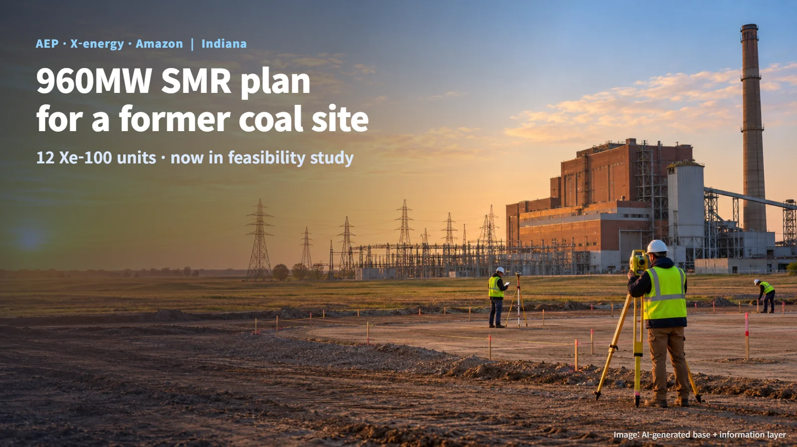
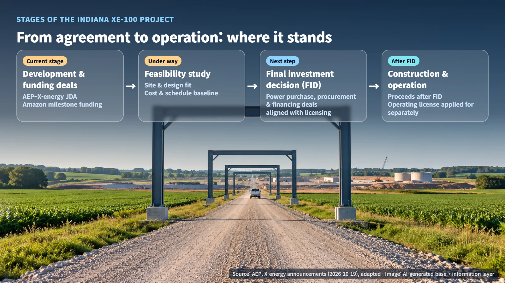
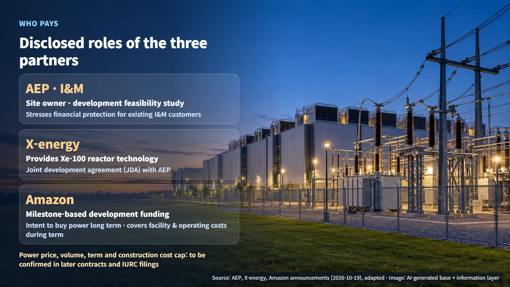

United States · SMR
Why Amazon Is Funding Nuclear Development: Where the 960MW Indiana SMR Project Stands Today
AEP, X-energy and Amazon have started a feasibility study for 12 Xe-100 units at a former coal plant site in Indiana, with several gates still ahead before construction.
When a big tech company announces it will help pay for a nuclear power project, the natural follow-up questions are when the plant will be built and when it will start delivering electricity. An announcement made in Indiana on October 19, 2026 is a good example. Let's walk through what stage this project has reached and which gates remain before actual construction can begin.

Twelve Xe-100 Units at a Former Coal Plant Site
On October 19, the US utility AEP and reactor developer X-energy announced a joint development agreement (JDA). The focus is AEP-owned land near the former Breed coal-fired power plant in Sullivan County, Indiana. The partners are evaluating this former Indiana Michigan Power (I&M) generation site as a potential location.
The concept calls for 12 Xe-100 units, for a total of 960MW. The initial plan arranges the 12 units in groups of four. The Xe-100 is a small modular reactor (SMR) with an electrical output of 80MW per unit, and it belongs to the family of high-temperature gas-cooled reactors. A high-temperature gas-cooled reactor removes heat from the core with helium gas instead of water. The fuel uses TRISO technology: tiny uranium kernels wrapped in several layers of ceramic and carbon, so that each particle carries its own miniature containment barrier.
Picture twelve small reactors lined up on the grounds of an old power station where the coal smoke has stopped, and you have the shape of this project. When a former plant site is reused, the first work is to survey grid connection, ground and seismic conditions, cooling and water supply, and the state of existing equipment and the environment.
The Steps From Agreement to Final Investment Decision
The project is currently in the development and feasibility study stage. Once the feasibility study results are in, the project goes through a final investment decision (FID), the definitive commitment to spend money and build. Construction and commercial operation follow after that, in a conditional sequence.

X-energy listed several conditions as risk factors going forward: the results of the feasibility study, the continuation of the development agreement and the funding agreement, satisfaction of the conditions for funding payments, additional agreements for development, construction and operation, and licensing. It resembles climbing a mountain, where you pass a series of rest stops in turn before reaching the summit.
What has been set is the order of the steps; the date for each step will be decided along the way. After the feasibility study, power purchase, procurement and financing agreements will need to line up with the licensing schedule before the FID can be prepared. The payment amount for each milestone, the acceptance criteria and the settlement terms on termination have not been disclosed.
Who Pays for Development and Operation
Amazon has signed a separate funding agreement and is providing milestone-based development funding, meaning money is released each time a defined stage is achieved. Amazon has also stated its intent to buy the power from the completed facility under a long-term contract if the project proceeds to an FID, construction and commercial operation. The power purchase agreement is a follow-on contract still to be signed.
AEP explained that the structure has Amazon covering facility and operating costs during the contract term. It also emphasized financial protection for existing I&M customers. This year Amazon signed the White House Ratepayer Protection Pledge, stating that it will pay directly for the electricity costs and additional infrastructure costs of its data centers rather than passing them on to other customers.

The commitment that the electricity user will also carry the cost of building is the starting point of this project. The power price, purchase volume, contract term and any construction cost cap were not disclosed in the announcements. Who bears the cost of cancellation, delay or overruns, and how rates are allocated, will be confirmed through the contracts still to be signed and through filings with the Indiana Utility Regulatory Commission (IURC).
The Next Gate, Seen Through the Long Mott Project in Texas
The Xe-100 already has a project that started earlier. On April 16, 2025, the US Nuclear Regulatory Commission (NRC) announced that it had received a construction permit application for four Xe-100 units at the Long Mott project on Dow's Seadrift site in Texas. The application was submitted on March 31 and included a preliminary safety analysis report and an environmental report. The operating license is a separate application.
A preliminary safety analysis report shows, at the design stage, that the reactor can respond safely even in accident conditions. Regulatory reviewers turning page after page of a thick safety report is the gate the Indiana project will pass through next. After a construction permit is granted, another review awaits: the operating license.
The NRC application number and the IURC case number for the Indiana project have not yet been made public, and neither has the licensing schedule. The feasibility assessment results, the preconditions and planned timing for the FID, the site investigations and regulatory filings, and the long-term power purchase terms are expected to take shape one by one.
News that a big tech company is funding nuclear development means that a funding commitment for the development stage is now in place on the long road to a finished plant. Each time the project clears a gate, from feasibility study to investment decision, construction permit and operating license, this 960MW concept moves a step closer to becoming a real power station.